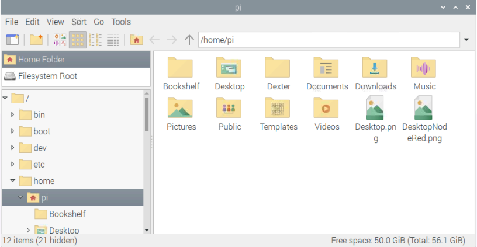

What benefit are hardware virtualization (and simulation) tools to an organization? Note: do not only rely on the book for the answer. Consult LinkedIn Learning and Wikipedia- Hardware virtualization.
(50) 1. Briefly explain the importance of a virtual machine in managing and maintaining a Windows Server 2019 or similar environment.
Do Hands-On Project 11-1 using your laptop, in the Somsen 301 lab, connected to the HP-USB-C dock, with the following modifications. In step 2 login as yourself. Perform all of the steps to learn about some of the most frequently used CLI-Command Line Interface commands. Note: in addition to the CLI, you may also want to investigate PowerShell
(50) 2. Briefly explain the benefit of a network administrator learning to use the CLI:
Do Hands-On Project 5-2 to learm more about the Linux file system. You will do this on a Raspberry Pi in Somsen 301. The Raspbian Operating System is based on the Linux Debian distribution. You can work with a partner.
The Linux GUI and some Debian system utilities will be different than the Fedora distribution discussed in the book. The Debian 'File Manager' is the equivalent of the Fedora 'Files'.  Your values will be different. In step 5, open the Terminal program by clicking the black icon in the top toolbar, fourth from left. In step 12 type mousepad newfile to open a Notepad like editor. In step 13 type 'exit' not 'q' to quit. Hint: in Debian type 'help' at the CLI to get a full list of the available commands.
mousepad newfile
(50) 3. Provide a command to return you to the home directory in Debian, no matter where you are.
Do Hands-On Project 11-3 to learn to use the Windows Task Manager to view running processes, services and performance. You can work with a partner.
In step 4, you can also click the 'Details' tab, then right-click any column and select 'CPU time'. In step 5 please note there are lots of columns listed, and 'command line' is about half way down.
(50) 4. Write your answer to step 12, the difference between the CPU and the CPU Time columns, in the space below.
Do Hands-On Project 5-4 to view processes running in Debian Linux on a Raspberry Pi in Somsen 301. You can work with a partner.
In step 1 start your Raspberry Pi. In step 2, click the Raspberry icon in the upper-left corner, click 'Accessories' then click 'Task Manager'. This does not have all the same features as mentioned in steps 3 and 4, but you will still get a good idea of what is happening on the device. In step 5, click the Internet icon in the top toolbar to start the 'Chromium' browser and view changes to CPU utilization. In step 6, click the fourth icon from the left in the top toolbar to open a terminal window.
In step 7 review the information displayed after entering the 'top' command. (50) 5. Use the Snipping Tool to make a screen shot of the Terminal window displaying the results of the top command. Make sure to include at least the top 10 rows. Save the screen shot as "Ex1" in your ' ' folder. You will be combining screen shots from several exercises at the end of this assignment, just as you did in Formative00-PDF File Creation.
Do Hands-On Project 11-5 to map a drive letter to a folder Professor Paulson created on a network server. You can work with a partner. You can also attempt this from an off-campus location, as long as you establish a Cisco AnyConnect vpn connection. Make sure to use your WSU laptop.
Read the project, and then map one of your laptop drive letters (likely one such as X:, Y: or Z:) to the unc path: \\mispgp\MIS452fall2021
\\mispgp\MIS452fall2021
After step 14, open Windows File Explorer and make a screen shot of the mapped drive. You should see a Readme.txt file, feel free to open and read it.
(100) 6. Use the Snipping Tool to make a screen shot of the command prompt Route Table. Save the screen shot as "Ex2" in your ' ' folder. You will be combining screen shots from several exercises at the end of this assignment, just as you did in Formative00-PDF File Creation.
There are no Packet Tracer Labs for this chapter.
Use a web browser to verify that you have published your website to https://classes.winona.edu/... Check that your name, StarID, email, class, semester, section and all of your answers are correct and visible. From the menu choose File>Print... and using "Microsoft Print to PDF" save a copy of this assignment as a .pdf file in your ' ' folder.
(50) 7. Save your file 'WebPage.pdf' to the ' ' folder.
Create one .pdf (portable document format) file from the screen shots that you have taken by following these steps.
(50) 8. Save your file 'ScreenShots.pdf' in your ' ' folder.
Use PDFill to merge the WebPage.pdf file with the ScreenShots.pdf file, and save it as 'Summative07.pdf' in your ' ' folder.
(50) 9. Upload your file 'Summative11.pdf' to the D2L 'Summative07' Assignment folder.
Use a browser to view your completed and published website at: https://classes.winona.edu/... Ensure that you have linked this assignment on your home page. Note that your screen shots do not have to be completed to perform this step.